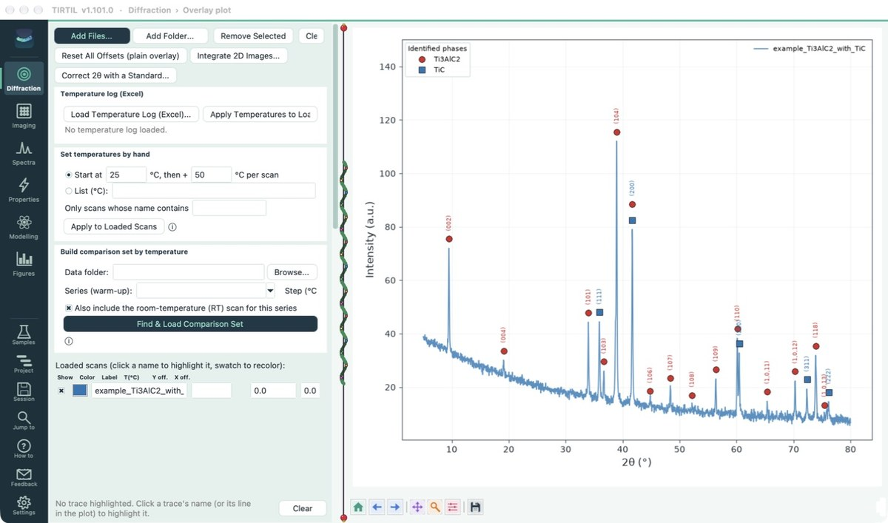
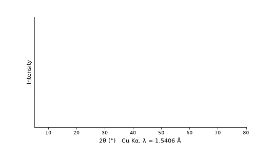

Diffraction
Peak ID
Which phases are in a scan.

Steps
Cu Kα (1.5406 Å)Set the wavelength first: every match uses d = λ / (2 sin θ).- Choose a scan and
Find Peaks. Raise the prominence if noise is picked up, lower it for weak peaks. Search COD / MP...Tick the reference phases to try. Add others from COD, Materials Project or a CIF.Match Peaks to PhasesMatch: each peak goes to the phase line within the tolerance. The score is how many lines of each phase were found.Find + Match ALL Visible ScansPeaks no phase explains point to another phase. Do the whole series at once with Find + Match ALL.
How it works

Worked example
A peak at 2θ = 41.8° (Cu Kα) has d = 1.5406 / (2 × sin 20.9°) = 2.16 Å. TiC (200) is at 2.164 Å, inside a 0.5 % tolerance, so it is matched to TiC. The strong peak at 39.0° is Ti3AlC2 (104): this sample is MAX phase with some TiC.
In TIRTIL: How to (⌘/) › Try It With Example Data loads this example.